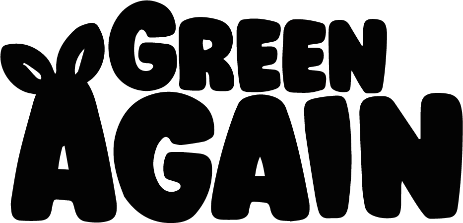
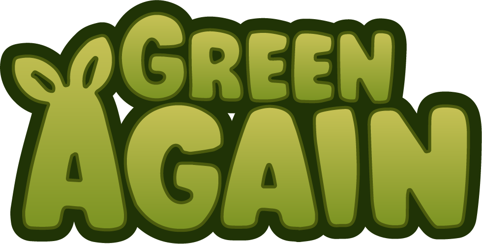

Description
Green Again is a chill and cozy city builder game. Help a tribe of little plant people (the Sproutlings) reclaim their planet taken over by defective robots. Build, decorate, and expand your settlement. Grow crops for your citizens, explore the unknown, and return the land to its former green state!
History
Green Again started as an idea of growing crops on an alien planet. The game design went through several iterations until I settled with the current cozy city builder terraforming game it is now. My goal is to capture the essence of some old classics of settlement and colony builders while focusing on combat-free laid back gameplay that emphasizes restoration and growth.
Features
- Build and decorate your settlement, grow crops according to changing weather. Unlock creative mode to build without limits
- Explore procedurally generated zones, all of them providing different challenges and obstacles and plenty of things to discover
- Restore your planet that's mostly turned into a hostile wasteland. Clear rubble and industrial debris to heal your wounded world
- Keep your Sproutlings happy and well-fed, enjoy watching them as they live their little lives within the world you're creating
- Unlock advanced technologies and upgrades, find new decorations
Videos
Green Again Announce trailer — YouTube
Images
{kind=link}
{kind=link}
{kind=link}
{kind=link}
{kind=link}
{kind=link}
{kind=link}
{kind=link}
wallpapers
{kind=link}
Logo & Icon
 {kind=link}
{kind=link}
{kind=link}
Widgets
About mattsnippets
- Boilerplate
- Indie game developer Mate Meszaros (collaborating with freelancers).
- More information
- More information on mattsnippets, our logo & relevant media are available here.
Green Again Credits
- Mate Meszaros "mattsnippets"
- Programmer, Designer
- Cille Rosenørn Abildhauge "Penzilla"
- Artist, Collaborator
Contact
- Inquiries
- matt@mattsnippets.com
- twitter.com/mattsnippets
- Discord
- discord.gg/pMFppmaEWh